A community network tool designed for neighboring dog owners.
Along with Chris Liu, we concepted a social network tool centered around dogs to build a trusted local neighboring community by helping local neighbors meet, foster and build meaningful connections with each other with the motivations to (a) construct a strong supporting system as dog owners and (b) expanding their social circle as neighbors.
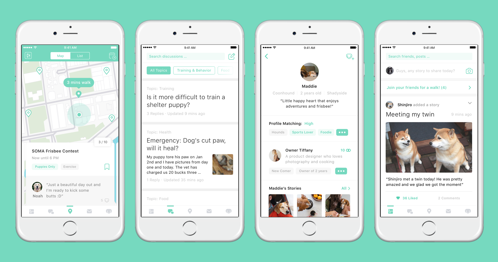Initial Problem:
A 400B market ready to be tackled.
$400 Billions a year, yet 2M dogs a year have depression attributed to lack of social interaction. After coming cross these numbers, we started the research with “What do you do about your dogs when you are away?” In the course of 2 months, we chatted with more than 40 dogs owners and dog lovers, and collected data from more than 120 pet owners to learn about their pains points & behaviiors. We heard that 37% of pet owners list "pet sitting" as their most stress as a pet owner since current pet sitting service fails in providing the trust layer and could be very expensive.
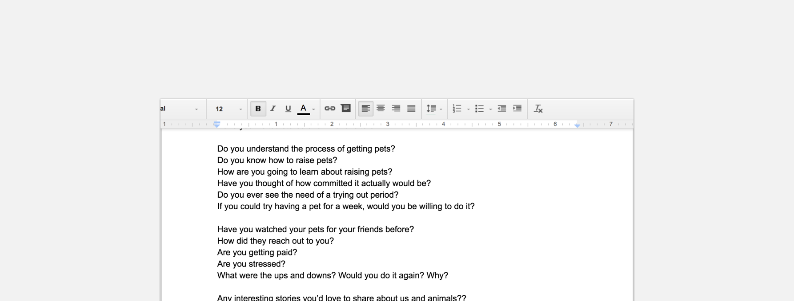Learnings from the first round of research:
I1. Pet sitting is a problem least stressful for experienced dog owners who have a strong "supporting system".
Most reliable & comfortable: The organic relationship of trading pet sitting duties among friends: "I'm lucky to have a circuit of friendswith whom we trade pet sitting duties when one of us is out of town"
Easily accessfamily/friends who enjoy taking care of dogs: "I leave my dogs to my families or my friends who really enjoy spending time with my dogs." "My dog only get along with people"
Breakdowns: Supporting system might not be working all the time when you only have a few supports.
I2. Pet sitting is a much more severe problem for newly became dog owners and newly moved dog owners.
"Pet hotels kinda became my only options""I have to find sitters through Rover, it's fine when it's for a few hours yet I get really anxious if I really have to leave her overnight"
I3. New owners & newly moved owners face more problems than just pet sitting
Reframe the problem:
Instead of difficulty in pet sitting, we should help dog owners to build a supporting system.
trust can't be built overnight and what dog owners need is a reliable supporting system. We decided to put the design focus on newly became pet owners and newly moved dog owners, as they are the people who need the most help.
Dig deeper into stakeholders' values & Needs:
Expectations for the support system?
How do experienced dog owners build their supporting system? What are their expectations for their friends? Who are they friends with? Why do they trust these people? We started answering these questions by asking what dog owners' current supporting circle like. Here are what we heard: "Someone who geniunely cares and gets along with my dog", "Easy to access","Someone I can trust and be friends with.", "Petting Experience"
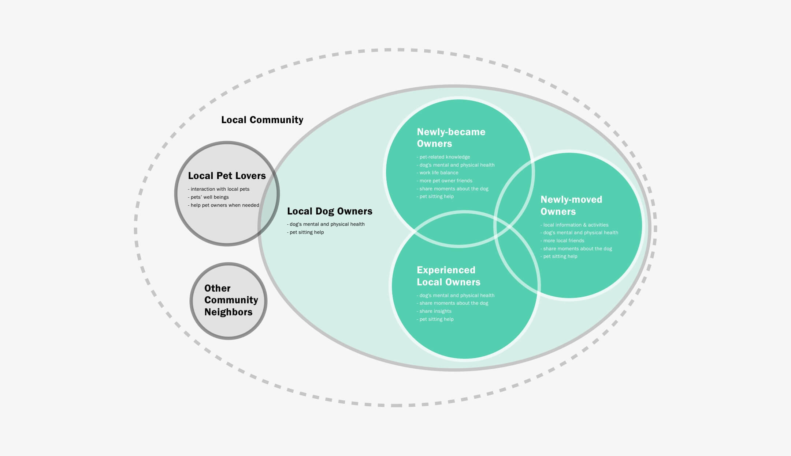Discover the underlying social drive
Empathy among pet owners. Common goal of mentally healthy pets serves motivation to find dogs playdates through meeting the neighbors.
New comers: they have the needs to expand their social network and get more faimilair with the new environment. Being a dog owner could be a great starting point.
New owners: new identity as a pet owner, and they will feel more empathetic and more related to other pet owners. Need to have more pet owner friends to share the experience and become a better pet owner.
Given the identity as a pet owner, it's a good way to start expanding the social network. .
Opportunity Space
Opportunity to connect local dog owners who have some connected backgrounds/interest and have them potentially become friends to form the supporting system, expand social circle and share the experience & empathy as dog owners to potentially solve problems not just limiting to pet sitting.
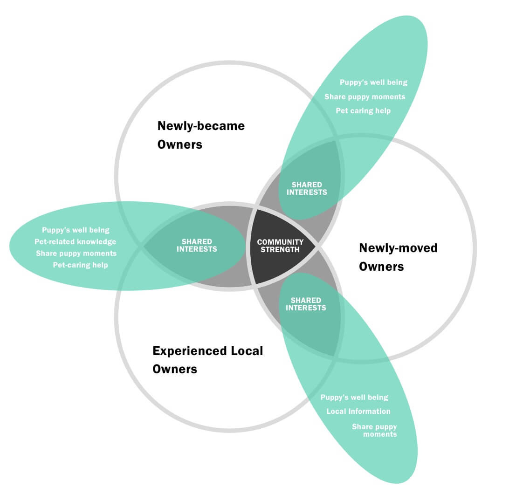From talking with pet owners, we recognized that the main barriers for local dog owners to make connections are the difficulty of making commitment to meet and difficulty to keep in touch. To help them overcome this specific barrier, we designed our final solution that focus on two main touch points.
Prototyping key touch points:
"Meeting & Stay Connected"
Touch point 1: Meeting
Potential Ideation: speed-dating among dog owners
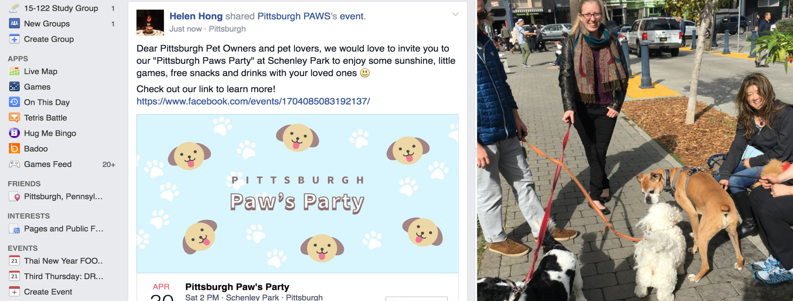Touch point 2: continue the relationship
Potential Ideation:promoted content,event,walk together...
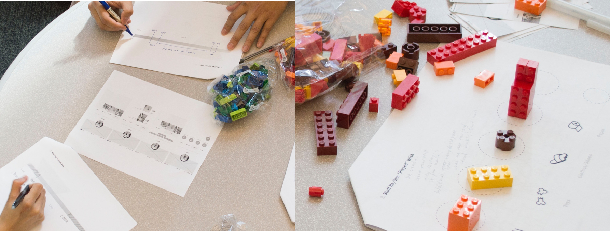From our research learnings, we decided that all these touch points have to happen in a manner that is Light-weight and organic to lower the barrier of entry, yet interesting & strong enough for dog owners to be able to attend.
Current Decisions, still under testing.
After 3 rounds of user testings, and millions of times of changing in information architecture, we decided to make a mobile app with these final design decisions incorporated.
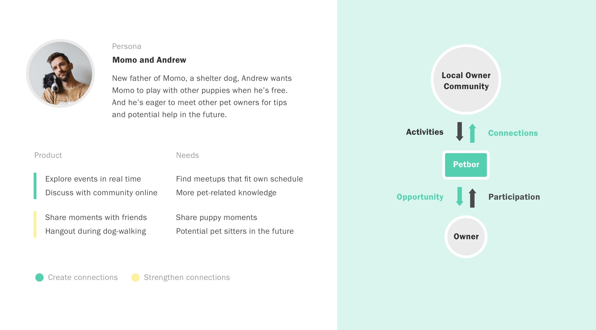1. Onboarding: Welcome to the community
How can we have petbors feel like home?
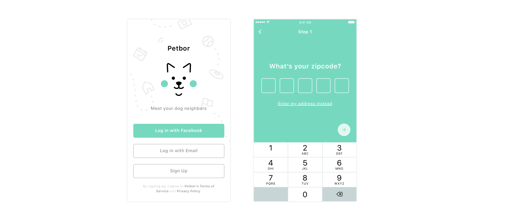
2. Meeting: Self-initiated location based events
A. Events happening now to lower the barrier of entry. Decision 2: Self-initiated events are a lot more fun and customized according to dog owner's interest. It scopes down the participants, yet provides more puprpose for similar-minded dog owners to meet and build connections. Potential Events: "Puppy Portraits with Momo dad!""training course held by ABC".

3.Continuing the connection: Content sharing and Take a Walk together?
Decision 1: Have the pet owners post about their photos online, yet under suggested content that will seem interesting to all the dog owners. 2. 'Take a walk together?"
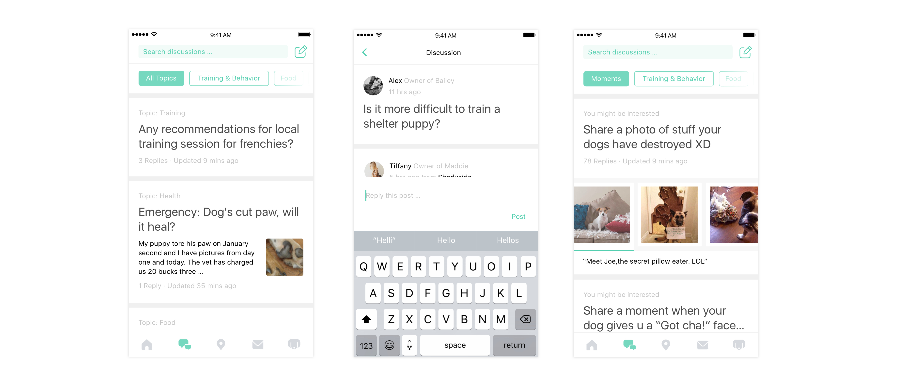4. Host own private events & extend your connections
Events will be suggested from the home feed, and at private events dog owners can meet more people from the comfort zone.
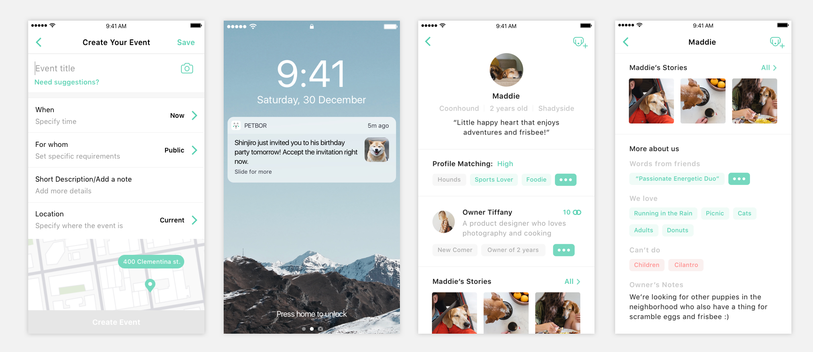5. Build the community dynamic: Self-started forums to provoke conversations in the community.
Crowd-sourcing to let local dog owners share the pain, knowldge, laughter and love as dog owners.
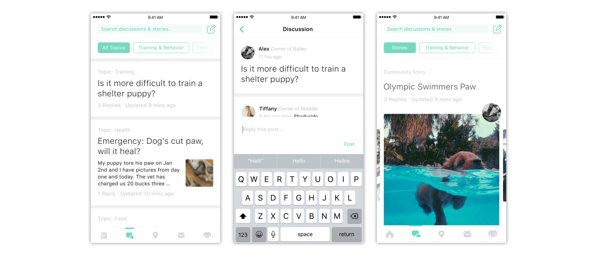6. What about Pet Sitting though?: "SOS! Gone for the weekend."
How can we solve the petting problem, with trust now?
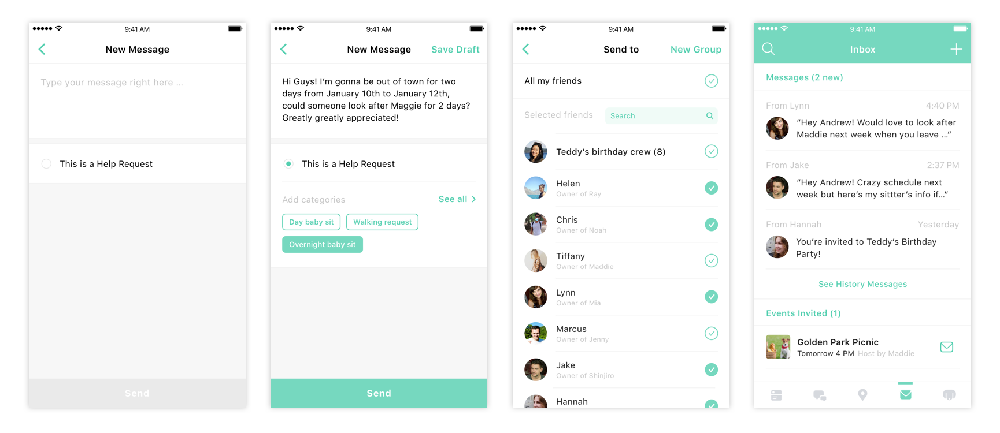Iterations, iterations, iterations.
Building with users from Macro to Micro.
Design is never finished and we are still in the current process of revisiting everything. During the design process, we stayed close to our users so we designed with them. We changed our ideas many times based on our user’s feedback and worked on the information archtecture millions of times to make sure everything is more straightforward. Here are some key iterations we made for some features.
I. Explore Event Cards
What information do people want to see while exploring? What info do people see after clicking in

II. Event Detailed Page

III. Proile Page
What info on the profile page makes it interesting for people to meet?